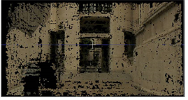
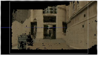
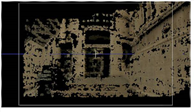
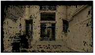
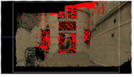

创建密集点云的下一步是使用序列和已解决相机中的关键帧信息跟踪您的镜头以获取更多 3D 特征点。
| 1。 | 单击 轨道 点 跟踪序列并创建密集的点云。 |
|
 |
| 3D 点云的一个例子。 |
默认设置在大多数序列上运行良好，但是您可以调整 密集 跟踪 用于更改云外观的控件:
| 2. | 调整 点 分离 控件设置点云中点之间的分离值 (以像素为单位)。 |
如您所见，较低的值会产生更密集的云，但会牺牲处理时间。
|
 |
 |
| 点分离为 0。 | 点分离 10。 |
| 3. | 设置 轨道 阈值 比较多个帧上的特征相似性，如果超过阈值，则拒绝它们。您可以调整此值以测试轨道是否可靠。 |
|
 |
 |
| 低阈值。 | 高门槛。 |
注意: 如果阈值设置得太高，你可能会发现你根本没有得到任何可靠的轨道。上面图像中的红色像素被拒绝。
| 4. | 继续到 过滤您的点云 . |
|
|